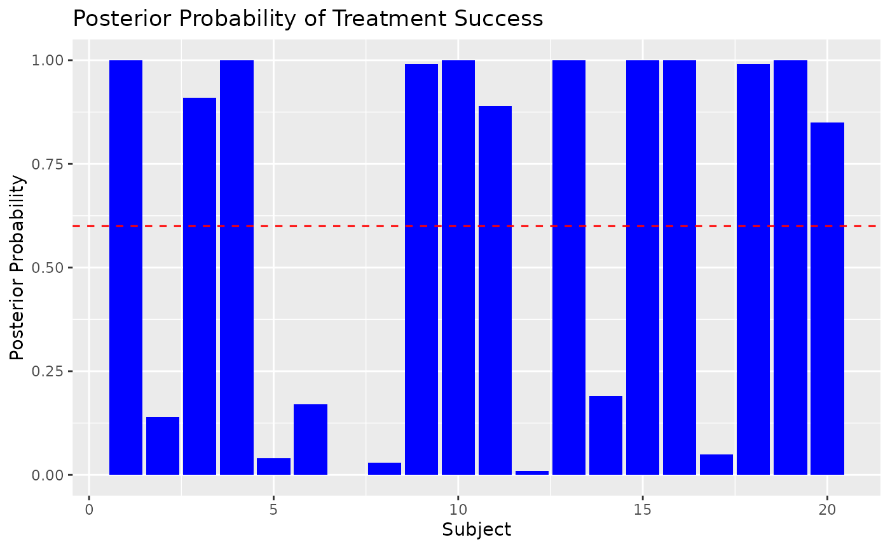
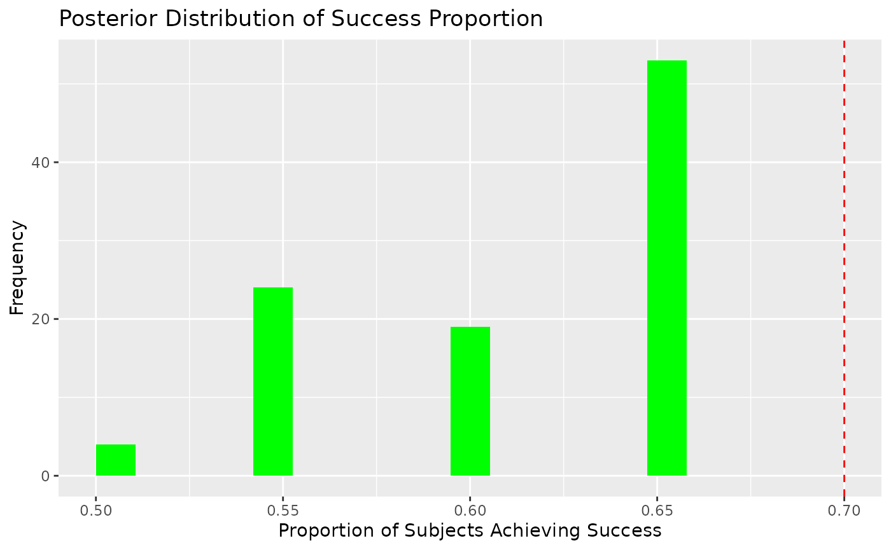

Using Bayesian Neural Networks in Clinical Trials
Swarnendu Chatterjee
2024-12-26
Source:vignettes/ct_app.Rmd
ct_app.RmdIntroduction
Bayesian Neural Networks (BNNs) offer a robust framework for prediction in clinical trials by providing posterior distributions of predictions. This allows for probabilistic reasoning, such as computing the probability that a treatment achieves a certain efficacy threshold or proportion of success.
In this vignette, we: 1. Illustrate data preparation for a clinical trial setting. 2. Fit a BNN to simulate clinical trial outcomes. 3. Leverage posterior distributions for decision-making, such as calculating posterior probabilities of treatment success.
1. Data Preparation
Consider a hypothetical clinical trial comparing the efficacy of a new treatment against a placebo. The response variable is binary, representing treatment success (1) or failure (0).
Simulating Data
set.seed(123)
# Simulate predictor variables (e.g., patient covariates)
n_subjects <- 100
Age <- runif(n_subjects, 18, 50) # Age in years
Dose <- runif(n_subjects, 10, 100) # Dose levels
Severity <- runif(n_subjects, 1, 10) # Baseline severity (arbitrary scale)
# Define true probabilities using a nonlinear function
beta_0 <- 1
beta_1 <- 0.3
beta_2 <- -0.1
beta_3 <- -0.02
beta_4 <- 0.005
logit_p <- beta_0 + beta_1 * Dose + beta_2 * log(Severity) +
beta_3 * Age^2 + beta_4 * (Age * Dose)
p_success <- 1 / (1 + exp(-logit_p)) # Sigmoid transformation
# Simulate binary outcomes
Success <- rbinom(n_subjects, size = 1, prob = p_success)
trial_data <- cbind.data.frame(Success, Age, Dose, Severity)
# Split into training and testing
train_idx <- sample(seq_len(n_subjects), size = 0.8 * n_subjects)
training_data <- trial_data[train_idx, ]
test_data <- trial_data[-train_idx, ]2. Fitting a Bayesian Neural Network
Fit a BNN to the simulated data. We use a binary classification model with a logistic sigmoid activation for the output layer.
# Fit a BNN
model <- bnns(
formula = Success ~ -1 + .,
data = training_data,
L = 2, # Number of hidden layers
nodes = c(16, 8), # Nodes per layer
act_fn = c(2, 2), # Activation functions for hidden layers
out_act_fn = 2, # Output activation: logistic sigmoid
iter = 2e2, # Bayesian sampling iterations
warmup = 1e2, # Warmup iterations
chains = 1 # Number of MCMC chains
)
#> Error in get(paste0(generic, ".", class), envir = get_method_env()) :
#> object 'type_sum.accel' not found
#>
#> TRANSLATING MODEL '' FROM Stan CODE TO C++ CODE NOW.
#> OS: x86_64, linux-gnu; rstan: 2.32.6; Rcpp: 1.0.13.1; inline: 0.3.20
#> >> setting environment variables:
#> PKG_LIBS = '/home/runner/work/_temp/Library/rstan/lib//libStanServices.a' -L'/home/runner/work/_temp/Library/StanHeaders/lib/' -lStanHeaders -L'/home/runner/work/_temp/Library/RcppParallel/lib/' -ltbb
#> PKG_CPPFLAGS = -I"/home/runner/work/_temp/Library/Rcpp/include/" -I"/home/runner/work/_temp/Library/RcppEigen/include/" -I"/home/runner/work/_temp/Library/RcppEigen/include/unsupported" -I"/home/runner/work/_temp/Library/BH/include" -I"/home/runner/work/_temp/Library/StanHeaders/include/src/" -I"/home/runner/work/_temp/Library/StanHeaders/include/" -I"/home/runner/work/_temp/Library/RcppParallel/include/" -I"/home/runner/work/_temp/Library/rstan/include" -DEIGEN_NO_DEBUG -DBOOST_DISABLE_ASSERTS -DBOOST_PENDING_INTEGER_LOG2_HPP -DSTAN_THREADS -DUSE_STANC3 -DSTRICT_R_HEADERS -DBOOST_PHOENIX_NO_VARIADIC_EXPRESSION -D_HAS_AUTO_PTR_ETC=0 -include '/home/runner/work/_temp/Library/StanHeaders/include/stan/math/prim/fun/Eigen.hpp' -D_REENTRANT -DRCPP_PARALLEL_USE_TBB=1
#> >> Program source :
#>
#> 1 :
#> 2 : // includes from the plugin
#> 3 : // [[Rcpp::plugins(cpp14)]]
#> 4 :
#> 5 :
#> 6 : // user includes
#> 7 : #include <Rcpp.h>
#> 8 : using namespace Rcpp;
#> 9 : #ifndef MODELS_HPP
#> 10 : #define MODELS_HPP
#> 11 : #define STAN__SERVICES__COMMAND_HPP
#> 12 : #include <rstan/rstaninc.hpp>
#> 13 : #ifndef USE_STANC3
#> 14 : #define USE_STANC3
#> 15 : #endif
#> 16 : // Code generated by stanc v2.32.2
#> 17 : #include <stan/model/model_header.hpp>
#> 18 : namespace model1eea1e34c8c6__namespace {
#> 19 : using stan::model::model_base_crtp;
#> 20 : using namespace stan::math;
#> 21 : stan::math::profile_map profiles__;
#> 22 : static constexpr std::array<const char*, 64> locations_array__ =
#> 23 : {" (found before start of program)",
#> 24 : " (in 'anon_model', line 11, column 2 to column 25)",
#> 25 : " (in 'anon_model', line 12, column 2 to column 22)",
#> 26 : " (in 'anon_model', line 13, column 2 to column 32)",
#> 27 : " (in 'anon_model', line 14, column 2 to column 22)",
#> 28 : " (in 'anon_model', line 15, column 2 to column 25)",
#> 29 : " (in 'anon_model', line 16, column 2 to column 13)",
#> 30 : " (in 'anon_model', line 19, column 2 to column 25)",
#> 31 : " (in 'anon_model', line 20, column 2 to column 25)",
#> 32 : " (in 'anon_model', line 21, column 2 to column 25)",
#> 33 : " (in 'anon_model', line 22, column 2 to column 25)",
#> 34 : " (in 'anon_model', line 23, column 2 to column 18)",
#> 35 : " (in 'anon_model', line 24, column 2 to column 35)",
#> 36 : " (in 'anon_model', line 28, column 7 to column 49)",
#> 37 : " (in 'anon_model', line 27, column 27 to column 49)",
#> 38 : " (in 'anon_model', line 27, column 7 to line 28, column 49)",
#> 39 : " (in 'anon_model', line 26, column 27 to column 46)",
#> 40 : " (in 'anon_model', line 26, column 7 to line 28, column 49)",
#> 41 : " (in 'anon_model', line 25, column 22 to column 36)",
#> 42 : " (in 'anon_model', line 25, column 2 to line 28, column 49)",
#> 43 : " (in 'anon_model', line 29, column 2 to column 36)",
#> 44 : " (in 'anon_model', line 33, column 7 to column 49)",
#> 45 : " (in 'anon_model', line 32, column 27 to column 49)",
#> 46 : " (in 'anon_model', line 32, column 7 to line 33, column 49)",
#> 47 : " (in 'anon_model', line 31, column 27 to column 46)",
#> 48 : " (in 'anon_model', line 31, column 7 to line 33, column 49)",
#> 49 : " (in 'anon_model', line 30, column 22 to column 36)",
#> 50 : " (in 'anon_model', line 30, column 2 to line 33, column 49)",
#> 51 : " (in 'anon_model', line 34, column 2 to column 29)",
#> 52 : " (in 'anon_model', line 37, column 2 to column 31)",
#> 53 : " (in 'anon_model', line 38, column 2 to column 20)",
#> 54 : " (in 'anon_model', line 39, column 2 to column 31)",
#> 55 : " (in 'anon_model', line 40, column 2 to column 20)",
#> 56 : " (in 'anon_model', line 41, column 2 to column 23)",
#> 57 : " (in 'anon_model', line 42, column 2 to column 23)",
#> 58 : " (in 'anon_model', line 43, column 2 to column 29)",
#> 59 : " (in 'anon_model', line 2, column 2 to column 17)",
#> 60 : " (in 'anon_model', line 3, column 2 to column 17)",
#> 61 : " (in 'anon_model', line 4, column 2 to column 17)",
#> 62 : " (in 'anon_model', line 5, column 21 to column 22)",
#> 63 : " (in 'anon_model', line 5, column 2 to column 24)",
#> 64 : " (in 'anon_model', line 6, column 9 to column 10)",
#> 65 : " (in 'anon_model', line 6, column 12 to column 13)",
#> 66 : " (in 'anon_model', line 6, column 2 to column 17)",
#> 67 : " (in 'anon_model', line 7, column 8 to column 9)",
#> 68 : " (in 'anon_model', line 7, column 2 to column 35)",
#> 69 : " (in 'anon_model', line 8, column 22 to column 23)",
#> 70 : " (in 'anon_model', line 8, column 2 to column 25)",
#> 71 : " (in 'anon_model', line 11, column 9 to column 10)",
#> 72 : " (in 'anon_model', line 11, column 12 to column 20)",
#> 73 : " (in 'anon_model', line 12, column 9 to column 17)",
#> 74 : " (in 'anon_model', line 13, column 9 to column 17)",
#> 75 : " (in 'anon_model', line 13, column 19 to column 27)",
#> 76 : " (in 'anon_model', line 14, column 9 to column 17)",
#> 77 : " (in 'anon_model', line 15, column 9 to column 17)",
#> 78 : " (in 'anon_model', line 19, column 9 to column 10)",
#> 79 : " (in 'anon_model', line 19, column 12 to column 20)",
#> 80 : " (in 'anon_model', line 20, column 9 to column 10)",
#> 81 : " (in 'anon_model', line 20, column 12 to column 20)",
#> 82 : " (in 'anon_model', line 21, column 9 to column 10)",
#> 83 : " (in 'anon_model', line 21, column 12 to column 20)",
#> 84 : " (in 'anon_model', line 22, column 9 to column 10)",
#> 85 : " (in 'anon_model', line 22, column 12 to column 20)",
#> 86 : " (in 'anon_model', line 23, column 9 to column 10)"};
#> 87 : class model1eea1e34c8c6_ final : public model_base_crtp<model1eea1e34c8c6_> {
#> 88 : private:
#> 89 : int n;
#> 90 : int m;
#> 91 : int L;
#> 92 : std::vector<int> nodes;
#> 93 : Eigen::Matrix<double,-1,-1> X_data__;
#> 94 : std::vector<int> y;
#> 95 : std::vector<int> act_fn;
#> 96 : int w1_2dim__;
#> 97 : int b1_1dim__;
#> 98 : int w2_1dim__;
#> 99 : int w2_2dim__;
#> 100 : int b2_1dim__;
#> 101 : int w_out_1dim__;
#> 102 : int z1_2dim__;
#> 103 : int a1_2dim__;
#> 104 : int z2_2dim__;
#> 105 : int a2_2dim__;
#> 106 : Eigen::Map<Eigen::Matrix<double,-1,-1>> X{nullptr, 0, 0};
#> 107 : public:
#> 108 : ~model1eea1e34c8c6_() {}
#> 109 : model1eea1e34c8c6_(stan::io::var_context& context__, unsigned int
#> 110 : random_seed__ = 0, std::ostream* pstream__ = nullptr)
#> 111 : : model_base_crtp(0) {
#> 112 : int current_statement__ = 0;
#> 113 : using local_scalar_t__ = double;
#> 114 : boost::ecuyer1988 base_rng__ =
#> 115 : stan::services::util::create_rng(random_seed__, 0);
#> 116 : // suppress unused var warning
#> 117 : (void) base_rng__;
#> 118 : static constexpr const char* function__ =
#> 119 : "model1eea1e34c8c6__namespace::model1eea1e34c8c6_";
#> 120 : // suppress unused var warning
#> 121 : (void) function__;
#> 122 : local_scalar_t__ DUMMY_VAR__(std::numeric_limits<double>::quiet_NaN());
#> 123 : // suppress unused var warning
#> 124 : (void) DUMMY_VAR__;
#> 125 : try {
#> 126 : int pos__ = std::numeric_limits<int>::min();
#> 127 : pos__ = 1;
#> 128 : current_statement__ = 36;
#> 129 : context__.validate_dims("data initialization", "n", "int",
#> 130 : std::vector<size_t>{});
#> 131 : n = std::numeric_limits<int>::min();
#> 132 : current_statement__ = 36;
#> 133 : n = context__.vals_i("n")[(1 - 1)];
#> 134 : current_statement__ = 36;
#> 135 : stan::math::check_greater_or_equal(function__, "n", n, 1);
#> 136 : current_statement__ = 37;
#> 137 : context__.validate_dims("data initialization", "m", "int",
#> 138 : std::vector<size_t>{});
#> 139 : m = std::numeric_limits<int>::min();
#> 140 : current_statement__ = 37;
#> 141 : m = context__.vals_i("m")[(1 - 1)];
#> 142 : current_statement__ = 37;
#> 143 : stan::math::check_greater_or_equal(function__, "m", m, 1);
#> 144 : current_statement__ = 38;
#> 145 : context__.validate_dims("data initialization", "L", "int",
#> 146 : std::vector<size_t>{});
#> 147 : L = std::numeric_limits<int>::min();
#> 148 : current_statement__ = 38;
#> 149 : L = context__.vals_i("L")[(1 - 1)];
#> 150 : current_statement__ = 38;
#> 151 : stan::math::check_greater_or_equal(function__, "L", L, 1);
#> 152 : current_statement__ = 39;
#> 153 : stan::math::validate_non_negative_index("nodes", "L", L);
#> 154 : current_statement__ = 40;
#> 155 : context__.validate_dims("data initialization", "nodes", "int",
#> 156 : std::vector<size_t>{static_cast<size_t>(L)});
#> 157 : nodes = std::vector<int>(L, std::numeric_limits<int>::min());
#> 158 : current_statement__ = 40;
#> 159 : nodes = context__.vals_i("nodes");
#> 160 : current_statement__ = 40;
#> 161 : stan::math::check_greater_or_equal(function__, "nodes", nodes, 1);
#> 162 : current_statement__ = 41;
#> 163 : stan::math::validate_non_negative_index("X", "n", n);
#> 164 : current_statement__ = 42;
#> 165 : stan::math::validate_non_negative_index("X", "m", m);
#> 166 : current_statement__ = 43;
#> 167 : context__.validate_dims("data initialization", "X", "double",
#> 168 : std::vector<size_t>{static_cast<size_t>(n), static_cast<size_t>(m)});
#> 169 : X_data__ = Eigen::Matrix<double,-1,-1>::Constant(n, m,
#> 170 : std::numeric_limits<double>::quiet_NaN());
#> 171 : new (&X) Eigen::Map<Eigen::Matrix<double,-1,-1>>(X_data__.data(), n, m);
#> 172 : {
#> 173 : std::vector<local_scalar_t__> X_flat__;
#> 174 : current_statement__ = 43;
#> 175 : X_flat__ = context__.vals_r("X");
#> 176 : current_statement__ = 43;
#> 177 : pos__ = 1;
#> 178 : current_statement__ = 43;
#> 179 : for (int sym1__ = 1; sym1__ <= m; ++sym1__) {
#> 180 : current_statement__ = 43;
#> 181 : for (int sym2__ = 1; sym2__ <= n; ++sym2__) {
#> 182 : current_statement__ = 43;
#> 183 : stan::model::assign(X, X_flat__[(pos__ - 1)],
#> 184 : "assigning variable X", stan::model::index_uni(sym2__),
#> 185 : stan::model::index_uni(sym1__));
#> 186 : current_statement__ = 43;
#> 187 : pos__ = (pos__ + 1);
#> 188 : }
#> 189 : }
#> 190 : }
#> 191 : current_statement__ = 44;
#> 192 : stan::math::validate_non_negative_index("y", "n", n);
#> 193 : current_statement__ = 45;
#> 194 : context__.validate_dims("data initialization", "y", "int",
#> 195 : std::vector<size_t>{static_cast<size_t>(n)});
#> 196 : y = std::vector<int>(n, std::numeric_limits<int>::min());
#> 197 : current_statement__ = 45;
#> 198 : y = context__.vals_i("y");
#> 199 : current_statement__ = 45;
#> 200 : stan::math::check_greater_or_equal(function__, "y", y, 0);
#> 201 : current_statement__ = 45;
#> 202 : stan::math::check_less_or_equal(function__, "y", y, 1);
#> 203 : current_statement__ = 46;
#> 204 : stan::math::validate_non_negative_index("act_fn", "L", L);
#> 205 : current_statement__ = 47;
#> 206 : context__.validate_dims("data initialization", "act_fn", "int",
#> 207 : std::vector<size_t>{static_cast<size_t>(L)});
#> 208 : act_fn = std::vector<int>(L, std::numeric_limits<int>::min());
#> 209 : current_statement__ = 47;
#> 210 : act_fn = context__.vals_i("act_fn");
#> 211 : current_statement__ = 47;
#> 212 : stan::math::check_greater_or_equal(function__, "act_fn", act_fn, 1);
#> 213 : current_statement__ = 48;
#> 214 : stan::math::validate_non_negative_index("w1", "m", m);
#> 215 : current_statement__ = 49;
#> 216 : w1_2dim__ = std::numeric_limits<int>::min();
#> 217 : current_statement__ = 49;
#> 218 : w1_2dim__ = stan::model::rvalue(nodes, "nodes",
#> 219 : stan::model::index_uni(1));
#> 220 : current_statement__ = 49;
#> 221 : stan::math::validate_non_negative_index("w1", "nodes[1]", w1_2dim__);
#> 222 : current_statement__ = 50;
#> 223 : b1_1dim__ = std::numeric_limits<int>::min();
#> 224 : current_statement__ = 50;
#> 225 : b1_1dim__ = stan::model::rvalue(nodes, "nodes",
#> 226 : stan::model::index_uni(1));
#> 227 : current_statement__ = 50;
#> 228 : stan::math::validate_non_negative_index("b1", "nodes[1]", b1_1dim__);
#> 229 : current_statement__ = 51;
#> 230 : w2_1dim__ = std::numeric_limits<int>::min();
#> 231 : current_statement__ = 51;
#> 232 : w2_1dim__ = stan::model::rvalue(nodes, "nodes",
#> 233 : stan::model::index_uni(1));
#> 234 : current_statement__ = 51;
#> 235 : stan::math::validate_non_negative_index("w2", "nodes[1]", w2_1dim__);
#> 236 : current_statement__ = 52;
#> 237 : w2_2dim__ = std::numeric_limits<int>::min();
#> 238 : current_statement__ = 52;
#> 239 : w2_2dim__ = stan::model::rvalue(nodes, "nodes",
#> 240 : stan::model::index_uni(2));
#> 241 : current_statement__ = 52;
#> 242 : stan::math::validate_non_negative_index("w2", "nodes[2]", w2_2dim__);
#> 243 : current_statement__ = 53;
#> 244 : b2_1dim__ = std::numeric_limits<int>::min();
#> 245 : current_statement__ = 53;
#> 246 : b2_1dim__ = stan::model::rvalue(nodes, "nodes",
#> 247 : stan::model::index_uni(2));
#> 248 : current_statement__ = 53;
#> 249 : stan::math::validate_non_negative_index("b2", "nodes[2]", b2_1dim__);
#> 250 : current_statement__ = 54;
#> 251 : w_out_1dim__ = std::numeric_limits<int>::min();
#> 252 : current_statement__ = 54;
#> 253 : w_out_1dim__ = stan::model::rvalue(nodes, "nodes",
#> 254 : stan::model::index_uni(L));
#> 255 : current_statement__ = 54;
#> 256 : stan::math::validate_non_negative_index("w_out", "nodes[L]",
#> 257 : w_out_1dim__);
#> 258 : current_statement__ = 55;
#> 259 : stan::math::validate_non_negative_index("z1", "n", n);
#> 260 : current_statement__ = 56;
#> 261 : z1_2dim__ = std::numeric_limits<int>::min();
#> 262 : current_statement__ = 56;
#> 263 : z1_2dim__ = stan::model::rvalue(nodes, "nodes",
#> 264 : stan::model::index_uni(1));
#> 265 : current_statement__ = 56;
#> 266 : stan::math::validate_non_negative_index("z1", "nodes[1]", z1_2dim__);
#> 267 : current_statement__ = 57;
#> 268 : stan::math::validate_non_negative_index("a1", "n", n);
#> 269 : current_statement__ = 58;
#> 270 : a1_2dim__ = std::numeric_limits<int>::min();
#> 271 : current_statement__ = 58;
#> 272 : a1_2dim__ = stan::model::rvalue(nodes, "nodes",
#> 273 : stan::model::index_uni(1));
#> 274 : current_statement__ = 58;
#> 275 : stan::math::validate_non_negative_index("a1", "nodes[1]", a1_2dim__);
#> 276 : current_statement__ = 59;
#> 277 : stan::math::validate_non_negative_index("z2", "n", n);
#> 278 : current_statement__ = 60;
#> 279 : z2_2dim__ = std::numeric_limits<int>::min();
#> 280 : current_statement__ = 60;
#> 281 : z2_2dim__ = stan::model::rvalue(nodes, "nodes",
#> 282 : stan::model::index_uni(2));
#> 283 : current_statement__ = 60;
#> 284 : stan::math::validate_non_negative_index("z2", "nodes[2]", z2_2dim__);
#> 285 : current_statement__ = 61;
#> 286 : stan::math::validate_non_negative_index("a2", "n", n);
#> 287 : current_statement__ = 62;
#> 288 : a2_2dim__ = std::numeric_limits<int>::min();
#> 289 : current_statement__ = 62;
#> 290 : a2_2dim__ = stan::model::rvalue(nodes, "nodes",
#> 291 : stan::model::index_uni(2));
#> 292 : current_statement__ = 62;
#> 293 : stan::math::validate_non_negative_index("a2", "nodes[2]", a2_2dim__);
#> 294 : current_statement__ = 63;
#> 295 : stan::math::validate_non_negative_index("y_hat", "n", n);
#> 296 : } catch (const std::exception& e) {
#> 297 : stan::lang::rethrow_located(e, locations_array__[current_statement__]);
#> 298 : }
#> 299 : num_params_r__ = (m * w1_2dim__) + b1_1dim__ + (w2_1dim__ * w2_2dim__) +
#> 300 : b2_1dim__ + w_out_1dim__ + 1;
#> 301 : }
#> 302 : inline std::string model_name() const final {
#> 303 : return "model1eea1e34c8c6_";
#> 304 : }
#> 305 : inline std::vector<std::string> model_compile_info() const noexcept {
#> 306 : return std::vector<std::string>{"stanc_version = stanc3 v2.32.2",
#> 307 : "stancflags = --"};
#> 308 : }
#> 309 : template <bool propto__, bool jacobian__, typename VecR, typename VecI,
#> 310 : stan::require_vector_like_t<VecR>* = nullptr,
#> 311 : stan::require_vector_like_vt<std::is_integral, VecI>* = nullptr>
#> 312 : inline stan::scalar_type_t<VecR>
#> 313 : log_prob_impl(VecR& params_r__, VecI& params_i__, std::ostream*
#> 314 : pstream__ = nullptr) const {
#> 315 : using T__ = stan::scalar_type_t<VecR>;
#> 316 : using local_scalar_t__ = T__;
#> 317 : T__ lp__(0.0);
#> 318 : stan::math::accumulator<T__> lp_accum__;
#> 319 : stan::io::deserializer<local_scalar_t__> in__(params_r__, params_i__);
#> 320 : int current_statement__ = 0;
#> 321 : local_scalar_t__ DUMMY_VAR__(std::numeric_limits<double>::quiet_NaN());
#> 322 : // suppress unused var warning
#> 323 : (void) DUMMY_VAR__;
#> 324 : static constexpr const char* function__ =
#> 325 : "model1eea1e34c8c6__namespace::log_prob";
#> 326 : // suppress unused var warning
#> 327 : (void) function__;
#> 328 : try {
#> 329 : Eigen::Matrix<local_scalar_t__,-1,-1> w1 =
#> 330 : Eigen::Matrix<local_scalar_t__,-1,-1>::Constant(m, w1_2dim__,
#> 331 : DUMMY_VAR__);
#> 332 : current_statement__ = 1;
#> 333 : w1 = in__.template read<Eigen::Matrix<local_scalar_t__,-1,-1>>(m,
#> 334 : w1_2dim__);
#> 335 : Eigen::Matrix<local_scalar_t__,-1,1> b1 =
#> 336 : Eigen::Matrix<local_scalar_t__,-1,1>::Constant(b1_1dim__,
#> 337 : DUMMY_VAR__);
#> 338 : current_statement__ = 2;
#> 339 : b1 = in__.template read<
#> 340 : Eigen::Matrix<local_scalar_t__,-1,1>>(b1_1dim__);
#> 341 : Eigen::Matrix<local_scalar_t__,-1,-1> w2 =
#> 342 : Eigen::Matrix<local_scalar_t__,-1,-1>::Constant(w2_1dim__, w2_2dim__,
#> 343 : DUMMY_VAR__);
#> 344 : current_statement__ = 3;
#> 345 : w2 = in__.template read<
#> 346 : Eigen::Matrix<local_scalar_t__,-1,-1>>(w2_1dim__, w2_2dim__);
#> 347 : Eigen::Matrix<local_scalar_t__,-1,1> b2 =
#> 348 : Eigen::Matrix<local_scalar_t__,-1,1>::Constant(b2_1dim__,
#> 349 : DUMMY_VAR__);
#> 350 : current_statement__ = 4;
#> 351 : b2 = in__.template read<
#> 352 : Eigen::Matrix<local_scalar_t__,-1,1>>(b2_1dim__);
#> 353 : Eigen::Matrix<local_scalar_t__,-1,1> w_out =
#> 354 : Eigen::Matrix<local_scalar_t__,-1,1>::Constant(w_out_1dim__,
#> 355 : DUMMY_VAR__);
#> 356 : current_statement__ = 5;
#> 357 : w_out = in__.template read<
#> 358 : Eigen::Matrix<local_scalar_t__,-1,1>>(w_out_1dim__);
#> 359 : local_scalar_t__ b_out = DUMMY_VAR__;
#> 360 : current_statement__ = 6;
#> 361 : b_out = in__.template read<local_scalar_t__>();
#> 362 : Eigen::Matrix<local_scalar_t__,-1,-1> z1 =
#> 363 : Eigen::Matrix<local_scalar_t__,-1,-1>::Constant(n, z1_2dim__,
#> 364 : DUMMY_VAR__);
#> 365 : Eigen::Matrix<local_scalar_t__,-1,-1> a1 =
#> 366 : Eigen::Matrix<local_scalar_t__,-1,-1>::Constant(n, a1_2dim__,
#> 367 : DUMMY_VAR__);
#> 368 : Eigen::Matrix<local_scalar_t__,-1,-1> z2 =
#> 369 : Eigen::Matrix<local_scalar_t__,-1,-1>::Constant(n, z2_2dim__,
#> 370 : DUMMY_VAR__);
#> 371 : Eigen::Matrix<local_scalar_t__,-1,-1> a2 =
#> 372 : Eigen::Matrix<local_scalar_t__,-1,-1>::Constant(n, a2_2dim__,
#> 373 : DUMMY_VAR__);
#> 374 : Eigen::Matrix<local_scalar_t__,-1,1> y_hat =
#> 375 : Eigen::Matrix<local_scalar_t__,-1,1>::Constant(n, DUMMY_VAR__);
#> 376 : current_statement__ = 12;
#> 377 : stan::model::assign(z1,
#> 378 : stan::math::add(stan::math::multiply(X, w1),
#> 379 : stan::math::rep_matrix(stan::math::transpose(b1), n)),
#> 380 : "assigning variable z1");
#> 381 : current_statement__ = 19;
#> 382 : if (stan::math::logical_eq(
#> 383 : stan::model::rvalue(act_fn, "act_fn", stan::model::index_uni(1)),
#> 384 : 1)) {
#> 385 : current_statement__ = 18;
#> 386 : stan::model::assign(a1, stan::math::tanh(z1), "assigning variable a1");
#> 387 : } else {
#> 388 : current_statement__ = 17;
#> 389 : if (stan::math::logical_eq(
#> 390 : stan::model::rvalue(act_fn, "act_fn", stan::model::index_uni(1)),
#> 391 : 2)) {
#> 392 : current_statement__ = 16;
#> 393 : stan::model::assign(a1, stan::math::inv_logit(z1),
#> 394 : "assigning variable a1");
#> 395 : } else {
#> 396 : current_statement__ = 15;
#> 397 : if (stan::math::logical_eq(
#> 398 : stan::model::rvalue(act_fn, "act_fn",
#> 399 : stan::model::index_uni(1)), 3)) {
#> 400 : current_statement__ = 14;
#> 401 : stan::model::assign(a1,
#> 402 : stan::math::log(stan::math::add(1, stan::math::exp(z1))),
#> 403 : "assigning variable a1");
#> 404 : } else {
#> 405 : current_statement__ = 13;
#> 406 : stan::model::assign(a1,
#> 407 : stan::math::fmax(
#> 408 : stan::math::rep_matrix(0, n,
#> 409 : stan::model::rvalue(nodes, "nodes",
#> 410 : stan::model::index_uni(1))), z1), "assigning variable a1");
#> 411 : }
#> 412 : }
#> 413 : }
#> 414 : current_statement__ = 20;
#> 415 : stan::model::assign(z2,
#> 416 : stan::math::add(stan::math::multiply(a1, w2),
#> 417 : stan::math::rep_matrix(stan::math::transpose(b2), n)),
#> 418 : "assigning variable z2");
#> 419 : current_statement__ = 27;
#> 420 : if (stan::math::logical_eq(
#> 421 : stan::model::rvalue(act_fn, "act_fn", stan::model::index_uni(2)),
#> 422 : 1)) {
#> 423 : current_statement__ = 26;
#> 424 : stan::model::assign(a2, stan::math::tanh(z2), "assigning variable a2");
#> 425 : } else {
#> 426 : current_statement__ = 25;
#> 427 : if (stan::math::logical_eq(
#> 428 : stan::model::rvalue(act_fn, "act_fn", stan::model::index_uni(2)),
#> 429 : 2)) {
#> 430 : current_statement__ = 24;
#> 431 : stan::model::assign(a2, stan::math::inv_logit(z2),
#> 432 : "assigning variable a2");
#> 433 : } else {
#> 434 : current_statement__ = 23;
#> 435 : if (stan::math::logical_eq(
#> 436 : stan::model::rvalue(act_fn, "act_fn",
#> 437 : stan::model::index_uni(2)), 3)) {
#> 438 : current_statement__ = 22;
#> 439 : stan::model::assign(a2,
#> 440 : stan::math::log(stan::math::add(1, stan::math::exp(z2))),
#> 441 : "assigning variable a2");
#> 442 : } else {
#> 443 : current_statement__ = 21;
#> 444 : stan::model::assign(a2,
#> 445 : stan::math::fmax(
#> 446 : stan::math::rep_matrix(0, n,
#> 447 : stan::model::rvalue(nodes, "nodes",
#> 448 : stan::model::index_uni(2))), z2), "assigning variable a2");
#> 449 : }
#> 450 : }
#> 451 : }
#> 452 : current_statement__ = 28;
#> 453 : stan::model::assign(y_hat,
#> 454 : stan::math::add(stan::math::multiply(a2, w_out), b_out),
#> 455 : "assigning variable y_hat");
#> 456 : {
#> 457 : current_statement__ = 29;
#> 458 : lp_accum__.add(stan::math::normal_lpdf<propto__>(
#> 459 : stan::math::to_vector(w1), 0, 1));
#> 460 : current_statement__ = 30;
#> 461 : lp_accum__.add(stan::math::normal_lpdf<propto__>(b1, 0, 1));
#> 462 : current_statement__ = 31;
#> 463 : lp_accum__.add(stan::math::normal_lpdf<propto__>(
#> 464 : stan::math::to_vector(w2), 0, 1));
#> 465 : current_statement__ = 32;
#> 466 : lp_accum__.add(stan::math::normal_lpdf<propto__>(b2, 0, 1));
#> 467 : current_statement__ = 33;
#> 468 : lp_accum__.add(stan::math::normal_lpdf<propto__>(w_out, 0, 1));
#> 469 : current_statement__ = 34;
#> 470 : lp_accum__.add(stan::math::normal_lpdf<propto__>(b_out, 0, 1));
#> 471 : current_statement__ = 35;
#> 472 : lp_accum__.add(stan::math::bernoulli_logit_lpmf<propto__>(y, y_hat));
#> 473 : }
#> 474 : } catch (const std::exception& e) {
#> 475 : stan::lang::rethrow_located(e, locations_array__[current_statement__]);
#> 476 : }
#> 477 : lp_accum__.add(lp__);
#> 478 : return lp_accum__.sum();
#> 479 : }
#> 480 : template <typename RNG, typename VecR, typename VecI, typename VecVar,
#> 481 : stan::require_vector_like_vt<std::is_floating_point,
#> 482 : VecR>* = nullptr, stan::require_vector_like_vt<std::is_integral,
#> 483 : VecI>* = nullptr, stan::require_vector_vt<std::is_floating_point,
#> 484 : VecVar>* = nullptr>
#> 485 : inline void
#> 486 : write_array_impl(RNG& base_rng__, VecR& params_r__, VecI& params_i__,
#> 487 : VecVar& vars__, const bool
#> 488 : emit_transformed_parameters__ = true, const bool
#> 489 : emit_generated_quantities__ = true, std::ostream*
#> 490 : pstream__ = nullptr) const {
#> 491 : using local_scalar_t__ = double;
#> 492 : stan::io::deserializer<local_scalar_t__> in__(params_r__, params_i__);
#> 493 : stan::io::serializer<local_scalar_t__> out__(vars__);
#> 494 : static constexpr bool propto__ = true;
#> 495 : // suppress unused var warning
#> 496 : (void) propto__;
#> 497 : double lp__ = 0.0;
#> 498 : // suppress unused var warning
#> 499 : (void) lp__;
#> 500 : int current_statement__ = 0;
#> 501 : stan::math::accumulator<double> lp_accum__;
#> 502 : local_scalar_t__ DUMMY_VAR__(std::numeric_limits<double>::quiet_NaN());
#> 503 : // suppress unused var warning
#> 504 : (void) DUMMY_VAR__;
#> 505 : constexpr bool jacobian__ = false;
#> 506 : static constexpr const char* function__ =
#> 507 : "model1eea1e34c8c6__namespace::write_array";
#> 508 : // suppress unused var warning
#> 509 : (void) function__;
#> 510 : try {
#> 511 : Eigen::Matrix<double,-1,-1> w1 =
#> 512 : Eigen::Matrix<double,-1,-1>::Constant(m, w1_2dim__,
#> 513 : std::numeric_limits<double>::quiet_NaN());
#> 514 : current_statement__ = 1;
#> 515 : w1 = in__.template read<Eigen::Matrix<local_scalar_t__,-1,-1>>(m,
#> 516 : w1_2dim__);
#> 517 : Eigen::Matrix<double,-1,1> b1 =
#> 518 : Eigen::Matrix<double,-1,1>::Constant(b1_1dim__,
#> 519 : std::numeric_limits<double>::quiet_NaN());
#> 520 : current_statement__ = 2;
#> 521 : b1 = in__.template read<
#> 522 : Eigen::Matrix<local_scalar_t__,-1,1>>(b1_1dim__);
#> 523 : Eigen::Matrix<double,-1,-1> w2 =
#> 524 : Eigen::Matrix<double,-1,-1>::Constant(w2_1dim__, w2_2dim__,
#> 525 : std::numeric_limits<double>::quiet_NaN());
#> 526 : current_statement__ = 3;
#> 527 : w2 = in__.template read<
#> 528 : Eigen::Matrix<local_scalar_t__,-1,-1>>(w2_1dim__, w2_2dim__);
#> 529 : Eigen::Matrix<double,-1,1> b2 =
#> 530 : Eigen::Matrix<double,-1,1>::Constant(b2_1dim__,
#> 531 : std::numeric_limits<double>::quiet_NaN());
#> 532 : current_statement__ = 4;
#> 533 : b2 = in__.template read<
#> 534 : Eigen::Matrix<local_scalar_t__,-1,1>>(b2_1dim__);
#> 535 : Eigen::Matrix<double,-1,1> w_out =
#> 536 : Eigen::Matrix<double,-1,1>::Constant(w_out_1dim__,
#> 537 : std::numeric_limits<double>::quiet_NaN());
#> 538 : current_statement__ = 5;
#> 539 : w_out = in__.template read<
#> 540 : Eigen::Matrix<local_scalar_t__,-1,1>>(w_out_1dim__);
#> 541 : double b_out = std::numeric_limits<double>::quiet_NaN();
#> 542 : current_statement__ = 6;
#> 543 : b_out = in__.template read<local_scalar_t__>();
#> 544 : Eigen::Matrix<double,-1,-1> z1 =
#> 545 : Eigen::Matrix<double,-1,-1>::Constant(n, z1_2dim__,
#> 546 : std::numeric_limits<double>::quiet_NaN());
#> 547 : Eigen::Matrix<double,-1,-1> a1 =
#> 548 : Eigen::Matrix<double,-1,-1>::Constant(n, a1_2dim__,
#> 549 : std::numeric_limits<double>::quiet_NaN());
#> 550 : Eigen::Matrix<double,-1,-1> z2 =
#> 551 : Eigen::Matrix<double,-1,-1>::Constant(n, z2_2dim__,
#> 552 : std::numeric_limits<double>::quiet_NaN());
#> 553 : Eigen::Matrix<double,-1,-1> a2 =
#> 554 : Eigen::Matrix<double,-1,-1>::Constant(n, a2_2dim__,
#> 555 : std::numeric_limits<double>::quiet_NaN());
#> 556 : Eigen::Matrix<double,-1,1> y_hat =
#> 557 : Eigen::Matrix<double,-1,1>::Constant(n,
#> 558 : std::numeric_limits<double>::quiet_NaN());
#> 559 : out__.write(w1);
#> 560 : out__.write(b1);
#> 561 : out__.write(w2);
#> 562 : out__.write(b2);
#> 563 : out__.write(w_out);
#> 564 : out__.write(b_out);
#> 565 : if (stan::math::logical_negation(
#> 566 : (stan::math::primitive_value(emit_transformed_parameters__) ||
#> 567 : stan::math::primitive_value(emit_generated_quantities__)))) {
#> 568 : return ;
#> 569 : }
#> 570 : current_statement__ = 12;
#> 571 : stan::model::assign(z1,
#> 572 : stan::math::add(stan::math::multiply(X, w1),
#> 573 : stan::math::rep_matrix(stan::math::transpose(b1), n)),
#> 574 : "assigning variable z1");
#> 575 : current_statement__ = 19;
#> 576 : if (stan::math::logical_eq(
#> 577 : stan::model::rvalue(act_fn, "act_fn", stan::model::index_uni(1)),
#> 578 : 1)) {
#> 579 : current_statement__ = 18;
#> 580 : stan::model::assign(a1, stan::math::tanh(z1), "assigning variable a1");
#> 581 : } else {
#> 582 : current_statement__ = 17;
#> 583 : if (stan::math::logical_eq(
#> 584 : stan::model::rvalue(act_fn, "act_fn", stan::model::index_uni(1)),
#> 585 : 2)) {
#> 586 : current_statement__ = 16;
#> 587 : stan::model::assign(a1, stan::math::inv_logit(z1),
#> 588 : "assigning variable a1");
#> 589 : } else {
#> 590 : current_statement__ = 15;
#> 591 : if (stan::math::logical_eq(
#> 592 : stan::model::rvalue(act_fn, "act_fn",
#> 593 : stan::model::index_uni(1)), 3)) {
#> 594 : current_statement__ = 14;
#> 595 : stan::model::assign(a1,
#> 596 : stan::math::log(stan::math::add(1, stan::math::exp(z1))),
#> 597 : "assigning variable a1");
#> 598 : } else {
#> 599 : current_statement__ = 13;
#> 600 : stan::model::assign(a1,
#> 601 : stan::math::fmax(
#> 602 : stan::math::rep_matrix(0, n,
#> 603 : stan::model::rvalue(nodes, "nodes",
#> 604 : stan::model::index_uni(1))), z1), "assigning variable a1");
#> 605 : }
#> 606 : }
#> 607 : }
#> 608 : current_statement__ = 20;
#> 609 : stan::model::assign(z2,
#> 610 : stan::math::add(stan::math::multiply(a1, w2),
#> 611 : stan::math::rep_matrix(stan::math::transpose(b2), n)),
#> 612 : "assigning variable z2");
#> 613 : current_statement__ = 27;
#> 614 : if (stan::math::logical_eq(
#> 615 : stan::model::rvalue(act_fn, "act_fn", stan::model::index_uni(2)),
#> 616 : 1)) {
#> 617 : current_statement__ = 26;
#> 618 : stan::model::assign(a2, stan::math::tanh(z2), "assigning variable a2");
#> 619 : } else {
#> 620 : current_statement__ = 25;
#> 621 : if (stan::math::logical_eq(
#> 622 : stan::model::rvalue(act_fn, "act_fn", stan::model::index_uni(2)),
#> 623 : 2)) {
#> 624 : current_statement__ = 24;
#> 625 : stan::model::assign(a2, stan::math::inv_logit(z2),
#> 626 : "assigning variable a2");
#> 627 : } else {
#> 628 : current_statement__ = 23;
#> 629 : if (stan::math::logical_eq(
#> 630 : stan::model::rvalue(act_fn, "act_fn",
#> 631 : stan::model::index_uni(2)), 3)) {
#> 632 : current_statement__ = 22;
#> 633 : stan::model::assign(a2,
#> 634 : stan::math::log(stan::math::add(1, stan::math::exp(z2))),
#> 635 : "assigning variable a2");
#> 636 : } else {
#> 637 : current_statement__ = 21;
#> 638 : stan::model::assign(a2,
#> 639 : stan::math::fmax(
#> 640 : stan::math::rep_matrix(0, n,
#> 641 : stan::model::rvalue(nodes, "nodes",
#> 642 : stan::model::index_uni(2))), z2), "assigning variable a2");
#> 643 : }
#> 644 : }
#> 645 : }
#> 646 : current_statement__ = 28;
#> 647 : stan::model::assign(y_hat,
#> 648 : stan::math::add(stan::math::multiply(a2, w_out), b_out),
#> 649 : "assigning variable y_hat");
#> 650 : if (emit_transformed_parameters__) {
#> 651 : out__.write(z1);
#> 652 : out__.write(a1);
#> 653 : out__.write(z2);
#> 654 : out__.write(a2);
#> 655 : out__.write(y_hat);
#> 656 : }
#> 657 : if (stan::math::logical_negation(emit_generated_quantities__)) {
#> 658 : return ;
#> 659 : }
#> 660 : } catch (const std::exception& e) {
#> 661 : stan::lang::rethrow_located(e, locations_array__[current_statement__]);
#> 662 : }
#> 663 : }
#> 664 : template <typename VecVar, typename VecI,
#> 665 : stan::require_vector_t<VecVar>* = nullptr,
#> 666 : stan::require_vector_like_vt<std::is_integral, VecI>* = nullptr>
#> 667 : inline void
#> 668 : unconstrain_array_impl(const VecVar& params_r__, const VecI& params_i__,
#> 669 : VecVar& vars__, std::ostream* pstream__ = nullptr) const {
#> 670 : using local_scalar_t__ = double;
#> 671 : stan::io::deserializer<local_scalar_t__> in__(params_r__, params_i__);
#> 672 : stan::io::serializer<local_scalar_t__> out__(vars__);
#> 673 : int current_statement__ = 0;
#> 674 : local_scalar_t__ DUMMY_VAR__(std::numeric_limits<double>::quiet_NaN());
#> 675 : // suppress unused var warning
#> 676 : (void) DUMMY_VAR__;
#> 677 : try {
#> 678 : int pos__ = std::numeric_limits<int>::min();
#> 679 : pos__ = 1;
#> 680 : Eigen::Matrix<local_scalar_t__,-1,-1> w1 =
#> 681 : Eigen::Matrix<local_scalar_t__,-1,-1>::Constant(m, w1_2dim__,
#> 682 : DUMMY_VAR__);
#> 683 : current_statement__ = 1;
#> 684 : stan::model::assign(w1,
#> 685 : in__.read<Eigen::Matrix<local_scalar_t__,-1,-1>>(m, w1_2dim__),
#> 686 : "assigning variable w1");
#> 687 : out__.write(w1);
#> 688 : Eigen::Matrix<local_scalar_t__,-1,1> b1 =
#> 689 : Eigen::Matrix<local_scalar_t__,-1,1>::Constant(b1_1dim__,
#> 690 : DUMMY_VAR__);
#> 691 : current_statement__ = 2;
#> 692 : stan::model::assign(b1,
#> 693 : in__.read<Eigen::Matrix<local_scalar_t__,-1,1>>(b1_1dim__),
#> 694 : "assigning variable b1");
#> 695 : out__.write(b1);
#> 696 : Eigen::Matrix<local_scalar_t__,-1,-1> w2 =
#> 697 : Eigen::Matrix<local_scalar_t__,-1,-1>::Constant(w2_1dim__, w2_2dim__,
#> 698 : DUMMY_VAR__);
#> 699 : current_statement__ = 3;
#> 700 : stan::model::assign(w2,
#> 701 : in__.read<Eigen::Matrix<local_scalar_t__,-1,-1>>(w2_1dim__,
#> 702 : w2_2dim__), "assigning variable w2");
#> 703 : out__.write(w2);
#> 704 : Eigen::Matrix<local_scalar_t__,-1,1> b2 =
#> 705 : Eigen::Matrix<local_scalar_t__,-1,1>::Constant(b2_1dim__,
#> 706 : DUMMY_VAR__);
#> 707 : current_statement__ = 4;
#> 708 : stan::model::assign(b2,
#> 709 : in__.read<Eigen::Matrix<local_scalar_t__,-1,1>>(b2_1dim__),
#> 710 : "assigning variable b2");
#> 711 : out__.write(b2);
#> 712 : Eigen::Matrix<local_scalar_t__,-1,1> w_out =
#> 713 : Eigen::Matrix<local_scalar_t__,-1,1>::Constant(w_out_1dim__,
#> 714 : DUMMY_VAR__);
#> 715 : current_statement__ = 5;
#> 716 : stan::model::assign(w_out,
#> 717 : in__.read<Eigen::Matrix<local_scalar_t__,-1,1>>(w_out_1dim__),
#> 718 : "assigning variable w_out");
#> 719 : out__.write(w_out);
#> 720 : local_scalar_t__ b_out = DUMMY_VAR__;
#> 721 : current_statement__ = 6;
#> 722 : b_out = in__.read<local_scalar_t__>();
#> 723 : out__.write(b_out);
#> 724 : } catch (const std::exception& e) {
#> 725 : stan::lang::rethrow_located(e, locations_array__[current_statement__]);
#> 726 : }
#> 727 : }
#> 728 : template <typename VecVar, stan::require_vector_t<VecVar>* = nullptr>
#> 729 : inline void
#> 730 : transform_inits_impl(const stan::io::var_context& context__, VecVar&
#> 731 : vars__, std::ostream* pstream__ = nullptr) const {
#> 732 : using local_scalar_t__ = double;
#> 733 : stan::io::serializer<local_scalar_t__> out__(vars__);
#> 734 : int current_statement__ = 0;
#> 735 : local_scalar_t__ DUMMY_VAR__(std::numeric_limits<double>::quiet_NaN());
#> 736 : // suppress unused var warning
#> 737 : (void) DUMMY_VAR__;
#> 738 : try {
#> 739 : current_statement__ = 1;
#> 740 : context__.validate_dims("parameter initialization", "w1", "double",
#> 741 : std::vector<size_t>{static_cast<size_t>(m),
#> 742 : static_cast<size_t>(w1_2dim__)});
#> 743 : current_statement__ = 2;
#> 744 : context__.validate_dims("parameter initialization", "b1", "double",
#> 745 : std::vector<size_t>{static_cast<size_t>(b1_1dim__)});
#> 746 : current_statement__ = 3;
#> 747 : context__.validate_dims("parameter initialization", "w2", "double",
#> 748 : std::vector<size_t>{static_cast<size_t>(w2_1dim__),
#> 749 : static_cast<size_t>(w2_2dim__)});
#> 750 : current_statement__ = 4;
#> 751 : context__.validate_dims("parameter initialization", "b2", "double",
#> 752 : std::vector<size_t>{static_cast<size_t>(b2_1dim__)});
#> 753 : current_statement__ = 5;
#> 754 : context__.validate_dims("parameter initialization", "w_out", "double",
#> 755 : std::vector<size_t>{static_cast<size_t>(w_out_1dim__)});
#> 756 : current_statement__ = 6;
#> 757 : context__.validate_dims("parameter initialization", "b_out", "double",
#> 758 : std::vector<size_t>{});
#> 759 : int pos__ = std::numeric_limits<int>::min();
#> 760 : pos__ = 1;
#> 761 : Eigen::Matrix<local_scalar_t__,-1,-1> w1 =
#> 762 : Eigen::Matrix<local_scalar_t__,-1,-1>::Constant(m, w1_2dim__,
#> 763 : DUMMY_VAR__);
#> 764 : {
#> 765 : std::vector<local_scalar_t__> w1_flat__;
#> 766 : current_statement__ = 1;
#> 767 : w1_flat__ = context__.vals_r("w1");
#> 768 : current_statement__ = 1;
#> 769 : pos__ = 1;
#> 770 : current_statement__ = 1;
#> 771 : for (int sym1__ = 1; sym1__ <= w1_2dim__; ++sym1__) {
#> 772 : current_statement__ = 1;
#> 773 : for (int sym2__ = 1; sym2__ <= m; ++sym2__) {
#> 774 : current_statement__ = 1;
#> 775 : stan::model::assign(w1, w1_flat__[(pos__ - 1)],
#> 776 : "assigning variable w1", stan::model::index_uni(sym2__),
#> 777 : stan::model::index_uni(sym1__));
#> 778 : current_statement__ = 1;
#> 779 : pos__ = (pos__ + 1);
#> 780 : }
#> 781 : }
#> 782 : }
#> 783 : out__.write(w1);
#> 784 : Eigen::Matrix<local_scalar_t__,-1,1> b1 =
#> 785 : Eigen::Matrix<local_scalar_t__,-1,1>::Constant(b1_1dim__,
#> 786 : DUMMY_VAR__);
#> 787 : {
#> 788 : std::vector<local_scalar_t__> b1_flat__;
#> 789 : current_statement__ = 2;
#> 790 : b1_flat__ = context__.vals_r("b1");
#> 791 : current_statement__ = 2;
#> 792 : pos__ = 1;
#> 793 : current_statement__ = 2;
#> 794 : for (int sym1__ = 1; sym1__ <= b1_1dim__; ++sym1__) {
#> 795 : current_statement__ = 2;
#> 796 : stan::model::assign(b1, b1_flat__[(pos__ - 1)],
#> 797 : "assigning variable b1", stan::model::index_uni(sym1__));
#> 798 : current_statement__ = 2;
#> 799 : pos__ = (pos__ + 1);
#> 800 : }
#> 801 : }
#> 802 : out__.write(b1);
#> 803 : Eigen::Matrix<local_scalar_t__,-1,-1> w2 =
#> 804 : Eigen::Matrix<local_scalar_t__,-1,-1>::Constant(w2_1dim__, w2_2dim__,
#> 805 : DUMMY_VAR__);
#> 806 : {
#> 807 : std::vector<local_scalar_t__> w2_flat__;
#> 808 : current_statement__ = 3;
#> 809 : w2_flat__ = context__.vals_r("w2");
#> 810 : current_statement__ = 3;
#> 811 : pos__ = 1;
#> 812 : current_statement__ = 3;
#> 813 : for (int sym1__ = 1; sym1__ <= w2_2dim__; ++sym1__) {
#> 814 : current_statement__ = 3;
#> 815 : for (int sym2__ = 1; sym2__ <= w2_1dim__; ++sym2__) {
#> 816 : current_statement__ = 3;
#> 817 : stan::model::assign(w2, w2_flat__[(pos__ - 1)],
#> 818 : "assigning variable w2", stan::model::index_uni(sym2__),
#> 819 : stan::model::index_uni(sym1__));
#> 820 : current_statement__ = 3;
#> 821 : pos__ = (pos__ + 1);
#> 822 : }
#> 823 : }
#> 824 : }
#> 825 : out__.write(w2);
#> 826 : Eigen::Matrix<local_scalar_t__,-1,1> b2 =
#> 827 : Eigen::Matrix<local_scalar_t__,-1,1>::Constant(b2_1dim__,
#> 828 : DUMMY_VAR__);
#> 829 : {
#> 830 : std::vector<local_scalar_t__> b2_flat__;
#> 831 : current_statement__ = 4;
#> 832 : b2_flat__ = context__.vals_r("b2");
#> 833 : current_statement__ = 4;
#> 834 : pos__ = 1;
#> 835 : current_statement__ = 4;
#> 836 : for (int sym1__ = 1; sym1__ <= b2_1dim__; ++sym1__) {
#> 837 : current_statement__ = 4;
#> 838 : stan::model::assign(b2, b2_flat__[(pos__ - 1)],
#> 839 : "assigning variable b2", stan::model::index_uni(sym1__));
#> 840 : current_statement__ = 4;
#> 841 : pos__ = (pos__ + 1);
#> 842 : }
#> 843 : }
#> 844 : out__.write(b2);
#> 845 : Eigen::Matrix<local_scalar_t__,-1,1> w_out =
#> 846 : Eigen::Matrix<local_scalar_t__,-1,1>::Constant(w_out_1dim__,
#> 847 : DUMMY_VAR__);
#> 848 : {
#> 849 : std::vector<local_scalar_t__> w_out_flat__;
#> 850 : current_statement__ = 5;
#> 851 : w_out_flat__ = context__.vals_r("w_out");
#> 852 : current_statement__ = 5;
#> 853 : pos__ = 1;
#> 854 : current_statement__ = 5;
#> 855 : for (int sym1__ = 1; sym1__ <= w_out_1dim__; ++sym1__) {
#> 856 : current_statement__ = 5;
#> 857 : stan::model::assign(w_out, w_out_flat__[(pos__ - 1)],
#> 858 : "assigning variable w_out", stan::model::index_uni(sym1__));
#> 859 : current_statement__ = 5;
#> 860 : pos__ = (pos__ + 1);
#> 861 : }
#> 862 : }
#> 863 : out__.write(w_out);
#> 864 : local_scalar_t__ b_out = DUMMY_VAR__;
#> 865 : current_statement__ = 6;
#> 866 : b_out = context__.vals_r("b_out")[(1 - 1)];
#> 867 : out__.write(b_out);
#> 868 : } catch (const std::exception& e) {
#> 869 : stan::lang::rethrow_located(e, locations_array__[current_statement__]);
#> 870 : }
#> 871 : }
#> 872 : inline void
#> 873 : get_param_names(std::vector<std::string>& names__, const bool
#> 874 : emit_transformed_parameters__ = true, const bool
#> 875 : emit_generated_quantities__ = true) const {
#> 876 : names__ = std::vector<std::string>{"w1", "b1", "w2", "b2", "w_out",
#> 877 : "b_out"};
#> 878 : if (emit_transformed_parameters__) {
#> 879 : std::vector<std::string> temp{"z1", "a1", "z2", "a2", "y_hat"};
#> 880 : names__.reserve(names__.size() + temp.size());
#> 881 : names__.insert(names__.end(), temp.begin(), temp.end());
#> 882 : }
#> 883 : if (emit_generated_quantities__) {}
#> 884 : }
#> 885 : inline void
#> 886 : get_dims(std::vector<std::vector<size_t>>& dimss__, const bool
#> 887 : emit_transformed_parameters__ = true, const bool
#> 888 : emit_generated_quantities__ = true) const {
#> 889 : dimss__ = std::vector<std::vector<size_t>>{std::vector<size_t>{static_cast<
#> 890 : size_t>(m),
#> 891 : static_cast<size_t>(
#> 892 : w1_2dim__)},
#> 893 : std::vector<size_t>{static_cast<size_t>(b1_1dim__)},
#> 894 : std::vector<size_t>{static_cast<size_t>(w2_1dim__),
#> 895 : static_cast<size_t>(w2_2dim__)},
#> 896 : std::vector<size_t>{static_cast<size_t>(b2_1dim__)},
#> 897 : std::vector<size_t>{static_cast<size_t>(w_out_1dim__)},
#> 898 : std::vector<size_t>{}};
#> 899 : if (emit_transformed_parameters__) {
#> 900 : std::vector<std::vector<size_t>>
#> 901 : temp{std::vector<size_t>{static_cast<size_t>(n),
#> 902 : static_cast<size_t>(z1_2dim__)},
#> 903 : std::vector<size_t>{static_cast<size_t>(n),
#> 904 : static_cast<size_t>(a1_2dim__)},
#> 905 : std::vector<size_t>{static_cast<size_t>(n),
#> 906 : static_cast<size_t>(z2_2dim__)},
#> 907 : std::vector<size_t>{static_cast<size_t>(n),
#> 908 : static_cast<size_t>(a2_2dim__)},
#> 909 : std::vector<size_t>{static_cast<size_t>(n)}};
#> 910 : dimss__.reserve(dimss__.size() + temp.size());
#> 911 : dimss__.insert(dimss__.end(), temp.begin(), temp.end());
#> 912 : }
#> 913 : if (emit_generated_quantities__) {}
#> 914 : }
#> 915 : inline void
#> 916 : constrained_param_names(std::vector<std::string>& param_names__, bool
#> 917 : emit_transformed_parameters__ = true, bool
#> 918 : emit_generated_quantities__ = true) const final {
#> 919 : for (int sym1__ = 1; sym1__ <= w1_2dim__; ++sym1__) {
#> 920 : for (int sym2__ = 1; sym2__ <= m; ++sym2__) {
#> 921 : param_names__.emplace_back(std::string() + "w1" + '.' +
#> 922 : std::to_string(sym2__) + '.' + std::to_string(sym1__));
#> 923 : }
#> 924 : }
#> 925 : for (int sym1__ = 1; sym1__ <= b1_1dim__; ++sym1__) {
#> 926 : param_names__.emplace_back(std::string() + "b1" + '.' +
#> 927 : std::to_string(sym1__));
#> 928 : }
#> 929 : for (int sym1__ = 1; sym1__ <= w2_2dim__; ++sym1__) {
#> 930 : for (int sym2__ = 1; sym2__ <= w2_1dim__; ++sym2__) {
#> 931 : param_names__.emplace_back(std::string() + "w2" + '.' +
#> 932 : std::to_string(sym2__) + '.' + std::to_string(sym1__));
#> 933 : }
#> 934 : }
#> 935 : for (int sym1__ = 1; sym1__ <= b2_1dim__; ++sym1__) {
#> 936 : param_names__.emplace_back(std::string() + "b2" + '.' +
#> 937 : std::to_string(sym1__));
#> 938 : }
#> 939 : for (int sym1__ = 1; sym1__ <= w_out_1dim__; ++sym1__) {
#> 940 : param_names__.emplace_back(std::string() + "w_out" + '.' +
#> 941 : std::to_string(sym1__));
#> 942 : }
#> 943 : param_names__.emplace_back(std::string() + "b_out");
#> 944 : if (emit_transformed_parameters__) {
#> 945 : for (int sym1__ = 1; sym1__ <= z1_2dim__; ++sym1__) {
#> 946 : for (int sym2__ = 1; sym2__ <= n; ++sym2__) {
#> 947 : param_names__.emplace_back(std::string() + "z1" + '.' +
#> 948 : std::to_string(sym2__) + '.' + std::to_string(sym1__));
#> 949 : }
#> 950 : }
#> 951 : for (int sym1__ = 1; sym1__ <= a1_2dim__; ++sym1__) {
#> 952 : for (int sym2__ = 1; sym2__ <= n; ++sym2__) {
#> 953 : param_names__.emplace_back(std::string() + "a1" + '.' +
#> 954 : std::to_string(sym2__) + '.' + std::to_string(sym1__));
#> 955 : }
#> 956 : }
#> 957 : for (int sym1__ = 1; sym1__ <= z2_2dim__; ++sym1__) {
#> 958 : for (int sym2__ = 1; sym2__ <= n; ++sym2__) {
#> 959 : param_names__.emplace_back(std::string() + "z2" + '.' +
#> 960 : std::to_string(sym2__) + '.' + std::to_string(sym1__));
#> 961 : }
#> 962 : }
#> 963 : for (int sym1__ = 1; sym1__ <= a2_2dim__; ++sym1__) {
#> 964 : for (int sym2__ = 1; sym2__ <= n; ++sym2__) {
#> 965 : param_names__.emplace_back(std::string() + "a2" + '.' +
#> 966 : std::to_string(sym2__) + '.' + std::to_string(sym1__));
#> 967 : }
#> 968 : }
#> 969 : for (int sym1__ = 1; sym1__ <= n; ++sym1__) {
#> 970 : param_names__.emplace_back(std::string() + "y_hat" + '.' +
#> 971 : std::to_string(sym1__));
#> 972 : }
#> 973 : }
#> 974 : if (emit_generated_quantities__) {}
#> 975 : }
#> 976 : inline void
#> 977 : unconstrained_param_names(std::vector<std::string>& param_names__, bool
#> 978 : emit_transformed_parameters__ = true, bool
#> 979 : emit_generated_quantities__ = true) const final {
#> 980 : for (int sym1__ = 1; sym1__ <= w1_2dim__; ++sym1__) {
#> 981 : for (int sym2__ = 1; sym2__ <= m; ++sym2__) {
#> 982 : param_names__.emplace_back(std::string() + "w1" + '.' +
#> 983 : std::to_string(sym2__) + '.' + std::to_string(sym1__));
#> 984 : }
#> 985 : }
#> 986 : for (int sym1__ = 1; sym1__ <= b1_1dim__; ++sym1__) {
#> 987 : param_names__.emplace_back(std::string() + "b1" + '.' +
#> 988 : std::to_string(sym1__));
#> 989 : }
#> 990 : for (int sym1__ = 1; sym1__ <= w2_2dim__; ++sym1__) {
#> 991 : for (int sym2__ = 1; sym2__ <= w2_1dim__; ++sym2__) {
#> 992 : param_names__.emplace_back(std::string() + "w2" + '.' +
#> 993 : std::to_string(sym2__) + '.' + std::to_string(sym1__));
#> 994 : }
#> 995 : }
#> 996 : for (int sym1__ = 1; sym1__ <= b2_1dim__; ++sym1__) {
#> 997 : param_names__.emplace_back(std::string() + "b2" + '.' +
#> 998 : std::to_string(sym1__));
#> 999 : }
#> 1000 : for (int sym1__ = 1; sym1__ <= w_out_1dim__; ++sym1__) {
#> 1001 : param_names__.emplace_back(std::string() + "w_out" + '.' +
#> 1002 : std::to_string(sym1__));
#> 1003 : }
#> 1004 : param_names__.emplace_back(std::string() + "b_out");
#> 1005 : if (emit_transformed_parameters__) {
#> 1006 : for (int sym1__ = 1; sym1__ <= z1_2dim__; ++sym1__) {
#> 1007 : for (int sym2__ = 1; sym2__ <= n; ++sym2__) {
#> 1008 : param_names__.emplace_back(std::string() + "z1" + '.' +
#> 1009 : std::to_string(sym2__) + '.' + std::to_string(sym1__));
#> 1010 : }
#> 1011 : }
#> 1012 : for (int sym1__ = 1; sym1__ <= a1_2dim__; ++sym1__) {
#> 1013 : for (int sym2__ = 1; sym2__ <= n; ++sym2__) {
#> 1014 : param_names__.emplace_back(std::string() + "a1" + '.' +
#> 1015 : std::to_string(sym2__) + '.' + std::to_string(sym1__));
#> 1016 : }
#> 1017 : }
#> 1018 : for (int sym1__ = 1; sym1__ <= z2_2dim__; ++sym1__) {
#> 1019 : for (int sym2__ = 1; sym2__ <= n; ++sym2__) {
#> 1020 : param_names__.emplace_back(std::string() + "z2" + '.' +
#> 1021 : std::to_string(sym2__) + '.' + std::to_string(sym1__));
#> 1022 : }
#> 1023 : }
#> 1024 : for (int sym1__ = 1; sym1__ <= a2_2dim__; ++sym1__) {
#> 1025 : for (int sym2__ = 1; sym2__ <= n; ++sym2__) {
#> 1026 : param_names__.emplace_back(std::string() + "a2" + '.' +
#> 1027 : std::to_string(sym2__) + '.' + std::to_string(sym1__));
#> 1028 : }
#> 1029 : }
#> 1030 : for (int sym1__ = 1; sym1__ <= n; ++sym1__) {
#> 1031 : param_names__.emplace_back(std::string() + "y_hat" + '.' +
#> 1032 : std::to_string(sym1__));
#> 1033 : }
#> 1034 : }
#> 1035 : if (emit_generated_quantities__) {}
#> 1036 : }
#> 1037 : inline std::string get_constrained_sizedtypes() const {
#> 1038 : return std::string("[{\"name\":\"w1\",\"type\":{\"name\":\"matrix\",\"rows\":" + std::to_string(m) + ",\"cols\":" + std::to_string(w1_2dim__) + "},\"block\":\"parameters\"},{\"name\":\"b1\",\"type\":{\"name\":\"vector\",\"length\":" + std::to_string(b1_1dim__) + "},\"block\":\"parameters\"},{\"name\":\"w2\",\"type\":{\"name\":\"matrix\",\"rows\":" + std::to_string(w2_1dim__) + ",\"cols\":" + std::to_string(w2_2dim__) + "},\"block\":\"parameters\"},{\"name\":\"b2\",\"type\":{\"name\":\"vector\",\"length\":" + std::to_string(b2_1dim__) + "},\"block\":\"parameters\"},{\"name\":\"w_out\",\"type\":{\"name\":\"vector\",\"length\":" + std::to_string(w_out_1dim__) + "},\"block\":\"parameters\"},{\"name\":\"b_out\",\"type\":{\"name\":\"real\"},\"block\":\"parameters\"},{\"name\":\"z1\",\"type\":{\"name\":\"matrix\",\"rows\":" + std::to_string(n) + ",\"cols\":" + std::to_string(z1_2dim__) + "},\"block\":\"transformed_parameters\"},{\"name\":\"a1\",\"type\":{\"name\":\"matrix\",\"rows\":" + std::to_string(n) + ",\"cols\":" + std::to_string(a1_2dim__) + "},\"block\":\"transformed_parameters\"},{\"name\":\"z2\",\"type\":{\"name\":\"matrix\",\"rows\":" + std::to_string(n) + ",\"cols\":" + std::to_string(z2_2dim__) + "},\"block\":\"transformed_parameters\"},{\"name\":\"a2\",\"type\":{\"name\":\"matrix\",\"rows\":" + std::to_string(n) + ",\"cols\":" + std::to_string(a2_2dim__) + "},\"block\":\"transformed_parameters\"},{\"name\":\"y_hat\",\"type\":{\"name\":\"vector\",\"length\":" + std::to_string(n) + "},\"block\":\"transformed_parameters\"}]");
#> 1039 : }
#> 1040 : inline std::string get_unconstrained_sizedtypes() const {
#> 1041 : return std::string("[{\"name\":\"w1\",\"type\":{\"name\":\"matrix\",\"rows\":" + std::to_string(m) + ",\"cols\":" + std::to_string(w1_2dim__) + "},\"block\":\"parameters\"},{\"name\":\"b1\",\"type\":{\"name\":\"vector\",\"length\":" + std::to_string(b1_1dim__) + "},\"block\":\"parameters\"},{\"name\":\"w2\",\"type\":{\"name\":\"matrix\",\"rows\":" + std::to_string(w2_1dim__) + ",\"cols\":" + std::to_string(w2_2dim__) + "},\"block\":\"parameters\"},{\"name\":\"b2\",\"type\":{\"name\":\"vector\",\"length\":" + std::to_string(b2_1dim__) + "},\"block\":\"parameters\"},{\"name\":\"w_out\",\"type\":{\"name\":\"vector\",\"length\":" + std::to_string(w_out_1dim__) + "},\"block\":\"parameters\"},{\"name\":\"b_out\",\"type\":{\"name\":\"real\"},\"block\":\"parameters\"},{\"name\":\"z1\",\"type\":{\"name\":\"matrix\",\"rows\":" + std::to_string(n) + ",\"cols\":" + std::to_string(z1_2dim__) + "},\"block\":\"transformed_parameters\"},{\"name\":\"a1\",\"type\":{\"name\":\"matrix\",\"rows\":" + std::to_string(n) + ",\"cols\":" + std::to_string(a1_2dim__) + "},\"block\":\"transformed_parameters\"},{\"name\":\"z2\",\"type\":{\"name\":\"matrix\",\"rows\":" + std::to_string(n) + ",\"cols\":" + std::to_string(z2_2dim__) + "},\"block\":\"transformed_parameters\"},{\"name\":\"a2\",\"type\":{\"name\":\"matrix\",\"rows\":" + std::to_string(n) + ",\"cols\":" + std::to_string(a2_2dim__) + "},\"block\":\"transformed_parameters\"},{\"name\":\"y_hat\",\"type\":{\"name\":\"vector\",\"length\":" + std::to_string(n) + "},\"block\":\"transformed_parameters\"}]");
#> 1042 : }
#> 1043 : // Begin method overload boilerplate
#> 1044 : template <typename RNG> inline void
#> 1045 : write_array(RNG& base_rng, Eigen::Matrix<double,-1,1>& params_r,
#> 1046 : Eigen::Matrix<double,-1,1>& vars, const bool
#> 1047 : emit_transformed_parameters = true, const bool
#> 1048 : emit_generated_quantities = true, std::ostream*
#> 1049 : pstream = nullptr) const {
#> 1050 : const size_t num_params__ = ((((((m * w1_2dim__) + b1_1dim__) +
#> 1051 : (w2_1dim__ * w2_2dim__)) + b2_1dim__) + w_out_1dim__) + 1);
#> 1052 : const size_t num_transformed = emit_transformed_parameters * ((((((n *
#> 1053 : z1_2dim__) + (n * a1_2dim__)) + (n * z2_2dim__)) + (n * a2_2dim__)) +
#> 1054 : n));
#> 1055 : const size_t num_gen_quantities = emit_generated_quantities * (0);
#> 1056 : const size_t num_to_write = num_params__ + num_transformed +
#> 1057 : num_gen_quantities;
#> 1058 : std::vector<int> params_i;
#> 1059 : vars = Eigen::Matrix<double,-1,1>::Constant(num_to_write,
#> 1060 : std::numeric_limits<double>::quiet_NaN());
#> 1061 : write_array_impl(base_rng, params_r, params_i, vars,
#> 1062 : emit_transformed_parameters, emit_generated_quantities, pstream);
#> 1063 : }
#> 1064 : template <typename RNG> inline void
#> 1065 : write_array(RNG& base_rng, std::vector<double>& params_r, std::vector<int>&
#> 1066 : params_i, std::vector<double>& vars, bool
#> 1067 : emit_transformed_parameters = true, bool
#> 1068 : emit_generated_quantities = true, std::ostream*
#> 1069 : pstream = nullptr) const {
#> 1070 : const size_t num_params__ = ((((((m * w1_2dim__) + b1_1dim__) +
#> 1071 : (w2_1dim__ * w2_2dim__)) + b2_1dim__) + w_out_1dim__) + 1);
#> 1072 : const size_t num_transformed = emit_transformed_parameters * ((((((n *
#> 1073 : z1_2dim__) + (n * a1_2dim__)) + (n * z2_2dim__)) + (n * a2_2dim__)) +
#> 1074 : n));
#> 1075 : const size_t num_gen_quantities = emit_generated_quantities * (0);
#> 1076 : const size_t num_to_write = num_params__ + num_transformed +
#> 1077 : num_gen_quantities;
#> 1078 : vars = std::vector<double>(num_to_write,
#> 1079 : std::numeric_limits<double>::quiet_NaN());
#> 1080 : write_array_impl(base_rng, params_r, params_i, vars,
#> 1081 : emit_transformed_parameters, emit_generated_quantities, pstream);
#> 1082 : }
#> 1083 : template <bool propto__, bool jacobian__, typename T_> inline T_
#> 1084 : log_prob(Eigen::Matrix<T_,-1,1>& params_r, std::ostream* pstream = nullptr) const {
#> 1085 : Eigen::Matrix<int,-1,1> params_i;
#> 1086 : return log_prob_impl<propto__, jacobian__>(params_r, params_i, pstream);
#> 1087 : }
#> 1088 : template <bool propto__, bool jacobian__, typename T_> inline T_
#> 1089 : log_prob(std::vector<T_>& params_r, std::vector<int>& params_i,
#> 1090 : std::ostream* pstream = nullptr) const {
#> 1091 : return log_prob_impl<propto__, jacobian__>(params_r, params_i, pstream);
#> 1092 : }
#> 1093 : inline void
#> 1094 : transform_inits(const stan::io::var_context& context,
#> 1095 : Eigen::Matrix<double,-1,1>& params_r, std::ostream*
#> 1096 : pstream = nullptr) const final {
#> 1097 : std::vector<double> params_r_vec(params_r.size());
#> 1098 : std::vector<int> params_i;
#> 1099 : transform_inits(context, params_i, params_r_vec, pstream);
#> 1100 : params_r = Eigen::Map<Eigen::Matrix<double,-1,1>>(params_r_vec.data(),
#> 1101 : params_r_vec.size());
#> 1102 : }
#> 1103 : inline void
#> 1104 : transform_inits(const stan::io::var_context& context, std::vector<int>&
#> 1105 : params_i, std::vector<double>& vars, std::ostream*
#> 1106 : pstream__ = nullptr) const {
#> 1107 : vars.resize(num_params_r__);
#> 1108 : transform_inits_impl(context, vars, pstream__);
#> 1109 : }
#> 1110 : inline void
#> 1111 : unconstrain_array(const std::vector<double>& params_constrained,
#> 1112 : std::vector<double>& params_unconstrained, std::ostream*
#> 1113 : pstream = nullptr) const {
#> 1114 : const std::vector<int> params_i;
#> 1115 : params_unconstrained = std::vector<double>(num_params_r__,
#> 1116 : std::numeric_limits<double>::quiet_NaN());
#> 1117 : unconstrain_array_impl(params_constrained, params_i,
#> 1118 : params_unconstrained, pstream);
#> 1119 : }
#> 1120 : inline void
#> 1121 : unconstrain_array(const Eigen::Matrix<double,-1,1>& params_constrained,
#> 1122 : Eigen::Matrix<double,-1,1>& params_unconstrained,
#> 1123 : std::ostream* pstream = nullptr) const {
#> 1124 : const std::vector<int> params_i;
#> 1125 : params_unconstrained = Eigen::Matrix<double,-1,1>::Constant(num_params_r__,
#> 1126 : std::numeric_limits<double>::quiet_NaN());
#> 1127 : unconstrain_array_impl(params_constrained, params_i,
#> 1128 : params_unconstrained, pstream);
#> 1129 : }
#> 1130 : };
#> 1131 : }
#> 1132 : using stan_model = model1eea1e34c8c6__namespace::model1eea1e34c8c6_;
#> 1133 : #ifndef USING_R
#> 1134 : // Boilerplate
#> 1135 : stan::model::model_base&
#> 1136 : new_model(stan::io::var_context& data_context, unsigned int seed,
#> 1137 : std::ostream* msg_stream) {
#> 1138 : stan_model* m = new stan_model(data_context, seed, msg_stream);
#> 1139 : return *m;
#> 1140 : }
#> 1141 : stan::math::profile_map& get_stan_profile_data() {
#> 1142 : return model1eea1e34c8c6__namespace::profiles__;
#> 1143 : }
#> 1144 : #endif
#> 1145 : #endif
#> 1146 :
#> 1147 : RCPP_MODULE(stan_fit4model1eea1e34c8c6__mod) {
#> 1148 : class_<rstan::stan_fit<stan_model, boost::random::ecuyer1988> >(
#> 1149 : "stan_fit4model1eea1e34c8c6_")
#> 1150 :
#> 1151 : .constructor<SEXP, SEXP, SEXP>()
#> 1152 :
#> 1153 : .method(
#> 1154 : "call_sampler",
#> 1155 : &rstan::stan_fit<stan_model, boost::random::ecuyer1988>::call_sampler)
#> 1156 : .method(
#> 1157 : "param_names",
#> 1158 : &rstan::stan_fit<stan_model, boost::random::ecuyer1988>::param_names)
#> 1159 : .method("param_names_oi",
#> 1160 : &rstan::stan_fit<stan_model,
#> 1161 : boost::random::ecuyer1988>::param_names_oi)
#> 1162 : .method("param_fnames_oi",
#> 1163 : &rstan::stan_fit<stan_model,
#> 1164 : boost::random::ecuyer1988>::param_fnames_oi)
#> 1165 : .method(
#> 1166 : "param_dims",
#> 1167 : &rstan::stan_fit<stan_model, boost::random::ecuyer1988>::param_dims)
#> 1168 : .method("param_dims_oi",
#> 1169 : &rstan::stan_fit<stan_model,
#> 1170 : boost::random::ecuyer1988>::param_dims_oi)
#> 1171 : .method("update_param_oi",
#> 1172 : &rstan::stan_fit<stan_model,
#> 1173 : boost::random::ecuyer1988>::update_param_oi)
#> 1174 : .method("param_oi_tidx",
#> 1175 : &rstan::stan_fit<stan_model,
#> 1176 : boost::random::ecuyer1988>::param_oi_tidx)
#> 1177 : .method("grad_log_prob",
#> 1178 : &rstan::stan_fit<stan_model,
#> 1179 : boost::random::ecuyer1988>::grad_log_prob)
#> 1180 : .method("log_prob",
#> 1181 : &rstan::stan_fit<stan_model, boost::random::ecuyer1988>::log_prob)
#> 1182 : .method("unconstrain_pars",
#> 1183 : &rstan::stan_fit<stan_model,
#> 1184 : boost::random::ecuyer1988>::unconstrain_pars)
#> 1185 : .method("constrain_pars",
#> 1186 : &rstan::stan_fit<stan_model,
#> 1187 : boost::random::ecuyer1988>::constrain_pars)
#> 1188 : .method(
#> 1189 : "num_pars_unconstrained",
#> 1190 : &rstan::stan_fit<stan_model,
#> 1191 : boost::random::ecuyer1988>::num_pars_unconstrained)
#> 1192 : .method(
#> 1193 : "unconstrained_param_names",
#> 1194 : &rstan::stan_fit<
#> 1195 : stan_model, boost::random::ecuyer1988>::unconstrained_param_names)
#> 1196 : .method(
#> 1197 : "constrained_param_names",
#> 1198 : &rstan::stan_fit<stan_model,
#> 1199 : boost::random::ecuyer1988>::constrained_param_names)
#> 1200 : .method("standalone_gqs",
#> 1201 : &rstan::stan_fit<stan_model,
#> 1202 : boost::random::ecuyer1988>::standalone_gqs);
#> 1203 : }
#> 1204 :
#> 1205 :
#> 1206 : // declarations
#> 1207 : extern "C" {
#> 1208 : SEXP file1eea740a146( ) ;
#> 1209 : }
#> 1210 :
#> 1211 : // definition
#> 1212 : SEXP file1eea740a146() {
#> 1213 : return Rcpp::wrap("anon_model");
#> 1214 : }
#>
#> CHECKING DATA AND PREPROCESSING FOR MODEL 'anon_model' NOW.
#>
#> COMPILING MODEL 'anon_model' NOW.
#>
#> STARTING SAMPLER FOR MODEL 'anon_model' NOW.3. Posterior Predictions
Generating Predictions with Uncertainty
The posterior distribution of predictions allows us to compute not just point estimates but also probabilistic metrics.
# Generate posterior predictions for the test set
posterior_preds <- predict(model, subset(test_data, select = -Success))
head(posterior_preds) # Each row corresponds to a subject, and columns are MCMC samples
#> [,1] [,2] [,3] [,4] [,5] [,6]
#> [1,] 0.96540544 0.95044320 0.8639886 0.96879020 0.98577016 0.91495821
#> [2,] 0.09688536 0.06496306 0.1532583 0.07583279 0.14705369 0.07804768
#> [3,] 0.09675958 0.06181107 0.1593923 0.06540429 0.04992526 0.07813405
#> [4,] 0.96193539 0.95000504 0.8940085 0.96884265 0.98240236 0.83258184
#> [5,] 0.68115868 0.75774754 0.5764709 0.73318432 0.27430942 0.21909992
#> [6,] 0.07057784 0.05950760 0.1502669 0.11169427 0.04545387 0.11796825
#> [,7] [,8] [,9] [,10] [,11] [,12]
#> [1,] 0.91970037 0.9221397 0.88580751 0.95538568 0.95021834 0.97381018
#> [2,] 0.09188143 0.1029894 0.18901170 0.04338679 0.09741205 0.07900010
#> [3,] 0.09100565 0.1090577 0.07081170 0.05436160 0.11282616 0.04564657
#> [4,] 0.91749136 0.9223156 0.88379427 0.91494129 0.95010117 0.97329536
#> [5,] 0.47061066 0.6083129 0.41133933 0.88552859 0.92940934 0.59757302
#> [6,] 0.07193414 0.1151133 0.07100077 0.02440260 0.09933909 0.03240259
#> [,13] [,14] [,15] [,16] [,17] [,18]
#> [1,] 0.96359538 0.95126412 0.95958453 0.98799108 0.9450177 0.88252517
#> [2,] 0.10932841 0.07730268 0.15265533 0.12565185 0.2559873 0.05112108
#> [3,] 0.07485027 0.07896275 0.15455183 0.05483277 0.2212894 0.06512479
#> [4,] 0.96320307 0.95126325 0.95917550 0.99033757 0.9428492 0.90678143
#> [5,] 0.42113683 0.73394715 0.72664563 0.60914730 0.8371144 0.75588868
#> [6,] 0.07236551 0.10405776 0.07834502 0.04424655 0.1853769 0.06173186
#> [,19] [,20] [,21] [,22] [,23] [,24] [,25]
#> [1,] 0.94826062 0.98336299 0.9483871 0.93820027 0.9389601 0.8570123 0.9250233
#> [2,] 0.06410978 0.08864533 0.1461942 0.05711957 0.1273991 0.2108441 0.1825022
#> [3,] 0.09552574 0.10258413 0.1546943 0.05010718 0.1128786 0.2106688 0.1824316
#> [4,] 0.92006090 0.95337677 0.9473623 0.92913291 0.9388833 0.8570123 0.8475761
#> [5,] 0.27954728 0.42333314 0.5446129 0.09064981 0.8259752 0.2227564 0.7611848
#> [6,] 0.11198219 0.10121687 0.1339196 0.04884905 0.1020319 0.2259007 0.1799139
#> [,26] [,27] [,28] [,29] [,30] [,31] [,32]
#> [1,] 0.95188447 0.93614653 0.97915223 0.9538411 0.88670961 0.8164815 0.93448124
#> [2,] 0.01876517 0.05159579 0.06854279 0.1419617 0.07576468 0.2072758 0.05282613
#> [3,] 0.02228304 0.09136696 0.07607244 0.1582908 0.07623292 0.2078918 0.02751751
#> [4,] 0.95186947 0.88334698 0.96920041 0.9211345 0.91911254 0.8163489 0.89772796
#> [5,] 0.33119388 0.82013013 0.91679389 0.8649880 0.55718589 0.4057789 0.47736025
#> [6,] 0.02640083 0.06031167 0.06703606 0.2051299 0.10078710 0.2690523 0.02637232
#> [,33] [,34] [,35] [,36] [,37] [,38] [,39]
#> [1,] 0.83093886 0.95971761 0.93211563 0.88909075 0.8603917 0.76933197 0.9691211
#> [2,] 0.09073357 0.06147170 0.39366445 0.02375625 0.1003205 0.02742836 0.1592738
#> [3,] 0.09145168 0.07648255 0.17540935 0.09414987 0.1008062 0.03542751 0.2768682
#> [4,] 0.83087890 0.95971782 0.91909721 0.88012789 0.8584144 0.76907414 0.9541437
#> [5,] 0.60638296 0.66572018 0.27103498 0.55118557 0.3606970 0.76177210 0.7496194
#> [6,] 0.09142162 0.06127533 0.06807762 0.04178248 0.1006602 0.02757636 0.2818228
#> [,40] [,41] [,42] [,43] [,44] [,45] [,46]
#> [1,] 0.9547982 0.95037079 0.92166620 0.96033781 0.93690596 0.90981579 0.9541870
#> [2,] 0.1616560 0.02956163 0.16796344 0.09085240 0.06798811 0.18927290 0.1528603
#> [3,] 0.3765773 0.21686511 0.07366499 0.11647928 0.22042299 0.13124826 0.0427016
#> [4,] 0.9222772 0.91899709 0.91848922 0.95256125 0.93586722 0.88273197 0.9541605
#> [5,] 0.5919946 0.65550849 0.28096960 0.44855007 0.84793377 0.74355243 0.6887550
#> [6,] 0.3604606 0.10205964 0.11808435 0.04244795 0.07758123 0.08522386 0.1028810
#> [,47] [,48] [,49] [,50] [,51] [,52] [,53]
#> [1,] 0.9576554 0.9101893 0.94068344 0.90658425 0.9822602 0.93841203 0.97492818
#> [2,] 0.1544121 0.1149193 0.40425935 0.03521565 0.1213527 0.11673252 0.12358277
#> [3,] 0.1565894 0.1129824 0.10429327 0.07006517 0.2124452 0.08649589 0.07277895
#> [4,] 0.8989994 0.8882882 0.94057337 0.90351073 0.9694353 0.94627329 0.97499294
#> [5,] 0.7790926 0.6578412 0.80367070 0.72008646 0.7476535 0.89526535 0.83792639
#> [6,] 0.1693040 0.1175729 0.07729776 0.03138329 0.1384847 0.06878357 0.03527414
#> [,54] [,55] [,56] [,57] [,58] [,59] [,60]
#> [1,] 0.98383313 0.95113976 0.95197720 0.9527216 0.9059660 0.9190505 0.9461210
#> [2,] 0.05476457 0.08204913 0.04073058 0.1387682 0.1427125 0.1526169 0.1422422
#> [3,] 0.13782449 0.08187902 0.17493907 0.1493934 0.1116551 0.1781386 0.1419542
#> [4,] 0.95459042 0.85641502 0.94918490 0.9527074 0.7854650 0.9188180 0.9556160
#> [5,] 0.91215866 0.51332833 0.60336654 0.6710783 0.4423166 0.5072204 0.3642702
#> [6,] 0.05787978 0.05142583 0.12551438 0.1256664 0.1999366 0.1013064 0.1411693
#> [,61] [,62] [,63] [,64] [,65] [,66] [,67]
#> [1,] 0.97297608 0.92761103 0.9340773 0.8931508 0.91332400 0.9330873 0.9652784
#> [2,] 0.11865216 0.06609694 0.1838781 0.1982891 0.07492102 0.1077329 0.1316126
#> [3,] 0.11776046 0.05661459 0.1868778 0.2053042 0.11121704 0.1145630 0.1776378
#> [4,] 0.97273670 0.92761047 0.9340964 0.8926439 0.89378463 0.9330872 0.9648835
#> [5,] 0.88924304 0.65641849 0.8038999 0.4518240 0.77241344 0.4235814 0.6865889
#> [6,] 0.02654554 0.12930304 0.2296690 0.2872912 0.05346084 0.0677504 0.3568487
#> [,68] [,69] [,70] [,71] [,72] [,73] [,74]
#> [1,] 0.92044419 0.95360552 0.91742259 0.9603671 0.9011607 0.9293669 0.9518035
#> [2,] 0.10997617 0.06315939 0.04969016 0.2055474 0.1296130 0.1954525 0.3168879
#> [3,] 0.07243965 0.14972664 0.06168066 0.2059193 0.1120620 0.2394636 0.1213549
#> [4,] 0.91935129 0.94598885 0.91739252 0.9360937 0.8715837 0.9274860 0.9252328
#> [5,] 0.48406376 0.77604624 0.64267045 0.5155509 0.4245891 0.6373298 0.5717879
#> [6,] 0.05254762 0.05192679 0.04272127 0.1951705 0.1065209 0.1921952 0.1211906
#> [,75] [,76] [,77] [,78] [,79] [,80]
#> [1,] 0.87635713 0.8568571 0.96650912 0.91656721 0.94490384 0.91249512
#> [2,] 0.07195412 0.1425923 0.06183125 0.22982447 0.10470599 0.09691140
#> [3,] 0.02586769 0.2166740 0.07803220 0.05468524 0.08515729 0.05646500
#> [4,] 0.87695772 0.7810638 0.96175475 0.94324038 0.93478241 0.91013212
#> [5,] 0.34412490 0.2976378 0.82180155 0.49798637 0.73349326 0.67166452
#> [6,] 0.01486669 0.2196317 0.07460268 0.04211082 0.04942317 0.07528487
#> [,81] [,82] [,83] [,84] [,85] [,86] [,87]
#> [1,] 0.91512323 0.96491291 0.93471399 0.98202096 0.94580631 0.9730071 0.9337858
#> [2,] 0.05075558 0.12075168 0.03546805 0.02021273 0.09364063 0.1727534 0.3168863
#> [3,] 0.08794212 0.09777358 0.06782028 0.01877231 0.07849459 0.1057670 0.1270849
#> [4,] 0.91473128 0.91455824 0.93214157 0.93430726 0.94321209 0.9653030 0.9337718
#> [5,] 0.55106586 0.37803663 0.73598917 0.41895573 0.37841744 0.5783605 0.5043067
#> [6,] 0.06142090 0.10363458 0.18268001 0.01559951 0.05331637 0.1052707 0.1353831
#> [,88] [,89] [,90] [,91] [,92] [,93] [,94]
#> [1,] 0.9547971 0.93396078 0.98278828 0.95599724 0.90337300 0.95117991 0.9728767
#> [2,] 0.1052705 0.05474521 0.05936686 0.06852273 0.05322308 0.14456716 0.1623113
#> [3,] 0.1055129 0.04890935 0.06172718 0.30145168 0.02806611 0.09862832 0.1634386
#> [4,] 0.9534533 0.93393227 0.93171386 0.85411298 0.88155150 0.95036190 0.9663756
#> [5,] 0.8558363 0.67508992 0.29369107 0.63225527 0.44654522 0.45478921 0.6767925
#> [6,] 0.1049393 0.05188726 0.04856018 0.40247117 0.01370030 0.11224624 0.1886304
#> [,95] [,96] [,97] [,98] [,99] [,100]
#> [1,] 0.90519402 0.97847860 0.8667449 0.9292480 0.93847974 0.97328000
#> [2,] 0.13622565 0.02675568 0.1620797 0.1151109 0.19191475 0.30049688
#> [3,] 0.13893618 0.01671995 0.1633061 0.1315142 0.11594363 0.17654239
#> [4,] 0.88949203 0.93622344 0.8611769 0.9285513 0.93843010 0.95527090
#> [5,] 0.54586348 0.84606755 0.7877992 0.2889200 0.70493744 0.47552655
#> [6,] 0.09729015 0.01130216 0.1614773 0.1149471 0.05747413 0.08714658Each entry in posterior_preds represents the predicted
probability of success from a single posterior sample.
4. Posterior Probability of Treatment Success
Threshold-Based Decision-Making
Suppose we define treatment success as a predicted probability ≥ 0.6. We can compute the posterior probability that this threshold is met for each subject.
Proportion of Subjects Likely to Achieve Success
Next, we calculate the posterior probability that a certain proportion of subjects in the treatment group achieve success.
# Define success proportion threshold
prop_success_threshold <- 0.7
# Simulate posterior proportion of success
posterior_success_proportion <- colMeans(posterior_preds >= success_threshold)
# Posterior probability that ≥ 70% of subjects achieve success
posterior_prob_high_success <- mean(posterior_success_proportion >= prop_success_threshold)
posterior_prob_high_success
#> [1] 05. Visualizing Posterior Insights
Posterior Predictive Distribution
library(ggplot2)
# Plot posterior probabilities of success for individual subjects
ggplot(data.frame(Subject = 1:nrow(test_data), Prob = posterior_probs_success), aes(x = Subject, y = Prob)) +
geom_bar(stat = "identity", fill = "blue") +
geom_hline(yintercept = success_threshold, color = "red", linetype = "dashed") +
labs(
title = "Posterior Probability of Treatment Success",
x = "Subject",
y = "Posterior Probability"
)
Distribution of Success Proportion
# Histogram of posterior success proportions
ggplot(data.frame(SuccessProp = posterior_success_proportion), aes(x = SuccessProp)) +
geom_histogram(fill = "green", bins = 20) +
geom_vline(xintercept = prop_success_threshold, color = "red", linetype = "dashed") +
labs(
title = "Posterior Distribution of Success Proportion",
x = "Proportion of Subjects Achieving Success",
y = "Frequency"
)
7. Conclusion
The bnns package empowers clinical trial analysts to
leverage Bayesian Neural Networks for predictive modeling and
decision-making. By utilizing posterior distributions, we can: -
Quantify uncertainty in predictions. - Make informed decisions about
treatment efficacy. - Evaluate trial outcomes based on predefined
success criteria.
This probabilistic framework is particularly valuable in scenarios where uncertainty plays a critical role in decision-making, such as early-phase clinical trials.
```